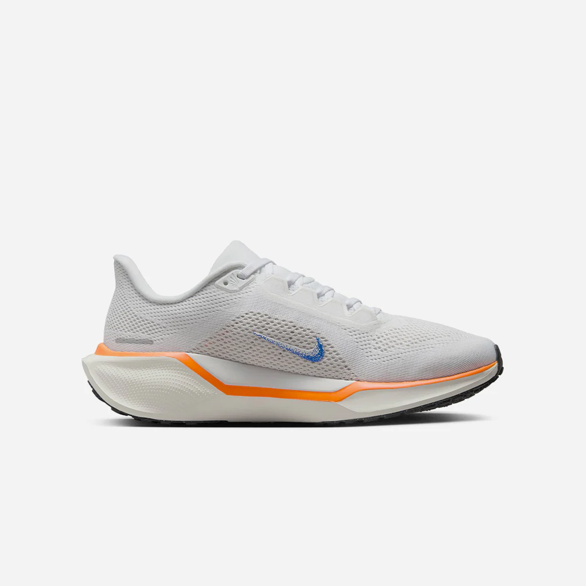
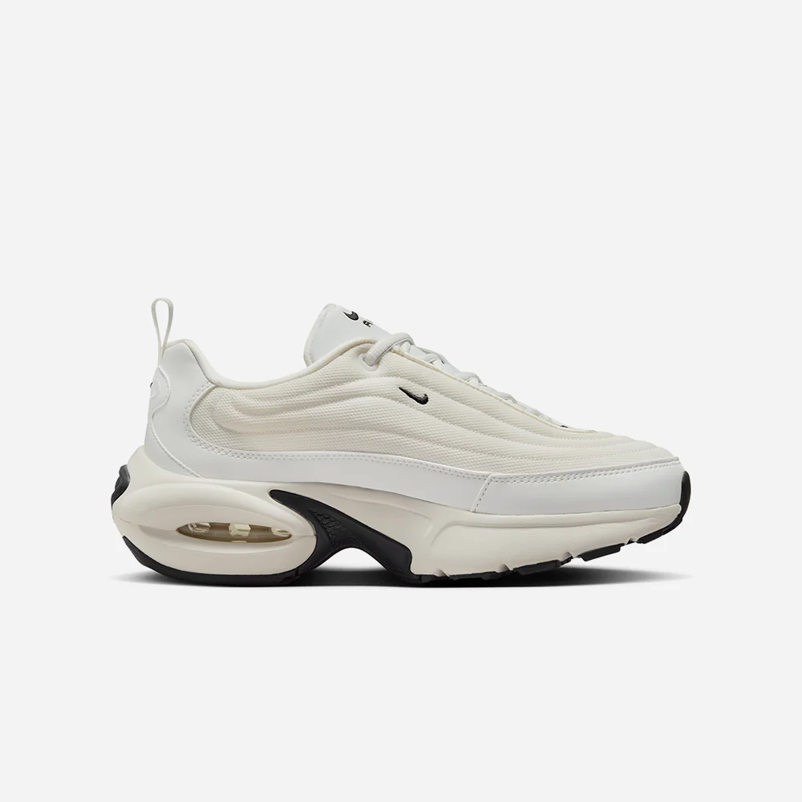

Danh sách sản phẩm
-
NIKE AIR ZOOM PEGASUS 41
GIÀY CHẠY BỘ NỮ

GIÀY CHẠY BỘ NỮ NIKE AIR ZOOM PEGASUS 41 Giày Chạy Bộ Nữ Nike Air Zoom Pegasus 41 sở hữu bọt ReactX - phản hồi năng lượng cao hơn 13% so với công nghệ React trước đây, cho bạn trải nghiệm chạy đường dài đầy năng lượng! Thêm vào đó, lưới kỹ thuật cải tiến ở phần thân giày giúp giảm trọng lượng và tăng độ thoáng khí. Bill Bowerman, nhà sáng tạo đầu tiên của Nike, đã đặt nền móng cho những sáng tạo của chúng tôi. Ông đã truyền cảm hứng cho các chi tiết thiết kế trong bộ sưu tập Blueprint, như logo Swoosh lốm đốm và hình vẽ phác chân trên lót giày. Chúng nhắc nhở chúng tôi về di sản quá khứ khi tiếp tục tiến đến tương lai. THÔNG SỐ Phần thân giày: Chất liệu lưới thoáng khí, được nâng cấp giúp giày nhẹ và thông thoáng hơn. Đế giữa: Bọt ReactX bao quanh các bộ phận Air Zoom ở mũi và gót chân, mang lại trải nghiệm chạy đầy năng lượng. Đế giữa ReactX hoàn toàn mới phản hồi năng lượng cao hơn 13% so với công nghệ React trước đây. Đế ngoài: Cao su lấy cảm hứng từ kiểu waffle giúp tăng độ bám và sự linh hoạt. Lưỡi gà và lớp lót cổ giày êm ái, mang lại sự vừa vặn chắc chắn và thoải mái. Trọng lượng: Khoảng 251 g/8.8 oz (cỡ giày nữ US 8). Độ chênh lệch gót - mũi : 10 mm. MR-10 Last - Đôi giày có độ vừa vặn tốt nhất và nhất quán nhất (giống như Pegasus 40). Bọt ReactX được chế tạo để giảm ít nhất 43% lượng khí thải carbon (trong 1 đôi) nhờ vào việc giảm năng lượng tiêu thụ trong quy trình sản xuất so với bọt React trước đây. Lượng khí thải carbon của ReactX dựa trên đánh giá từ cradle-to-gate do PRé Sustainability B.V và Intertek Trung Quốc thực hiện. Các thành phần đế giữa khác như túi khí, tấm đế hay các công thức bọt khác không được xem xét. Mã sản phẩm: HF7362-900
-
Nike Air Max Portal
Giày Sneaker Nữ .
GIÀY SNEAKER NỮ NIKE AIR MAX PORTAL Nâng tầm phong cách của bạn với Giày Sneaker Nữ Nike Air Max Portal! Thiết kế là sự kết hợp hoàn hảo giữa phong cách "bụi bặm" và sự thanh thoát, kết hợp đế giày to từ thập niên 2000 với phần thân giày tối giản của thiết kế hiện đại. Đệm giữa siêu êm ái để bạn có thể diện hàng ngày. THÔNG SỐ Chất liệu chần bông mang lại cảm giác êm ái và vẻ ngoài thanh lịch. Đế giữa bằng bọt dày với bộ đệm Nike Air có thể nhìn thấy ở gót giày, tăng thêm một chút chiều cao. Đế ngoài bằng cao su mang lại độ bám bền bỉ. Các chi tiết thiết kế lấy cảm hứng từ các mẫu giày chạy bộ thập niên 2000. Logo Swoosh thêu. Dây kéo ở gót. Mã sản phẩm: HF3053-103
-
Nike Air Max Excee
Giày Sneaker Nữ
GIÀY SNEAKER NỮ NIKE AIR MAX EXCEE Làm mới phong cách của bạn với Giày Sneaker Nữ Nike Air Max Excee! Thiết kế họa tiết paisley nổi bật kết hợp với các tông màu trung tính cổ điển, tạo nên vẻ ngoài vượt thời gian. Lấy cảm hứng từ Nike Air Max 90, đôi giày này mang đến một biến tấu mới cho biểu tượng - với các đường nét thiết kế kéo dài và tỷ lệ khác biệt. THÔNG SỐ Bộ đệm Max Air mang lại sự êm ái lâu dài và có thể nhìn thấy qua 3 "ô cửa" Thiết kế gợi nhớ đến Air Max 90, nhưng được biến tấu hiện đại Các lớp vải khâu tăng độ bền. Cổ giày thấp được đệm, thanh lịch và thoải mái. Đế giữa bằng bọt xốp. Đế ngoài bằng cao su. Mã sản phẩm: HJ7927-133